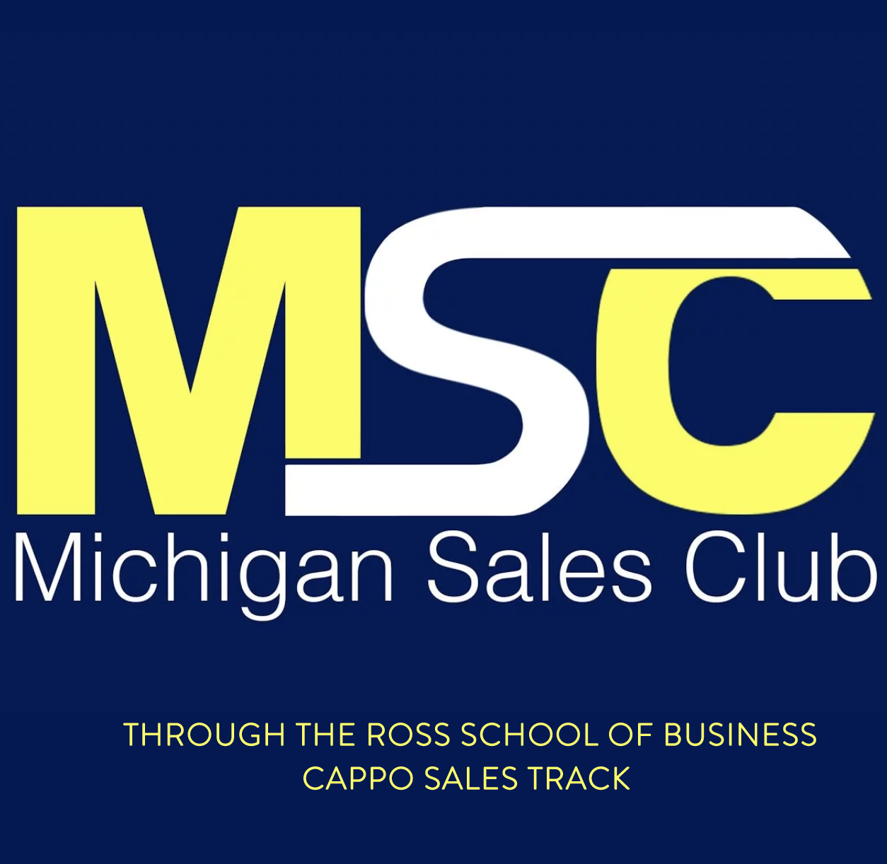
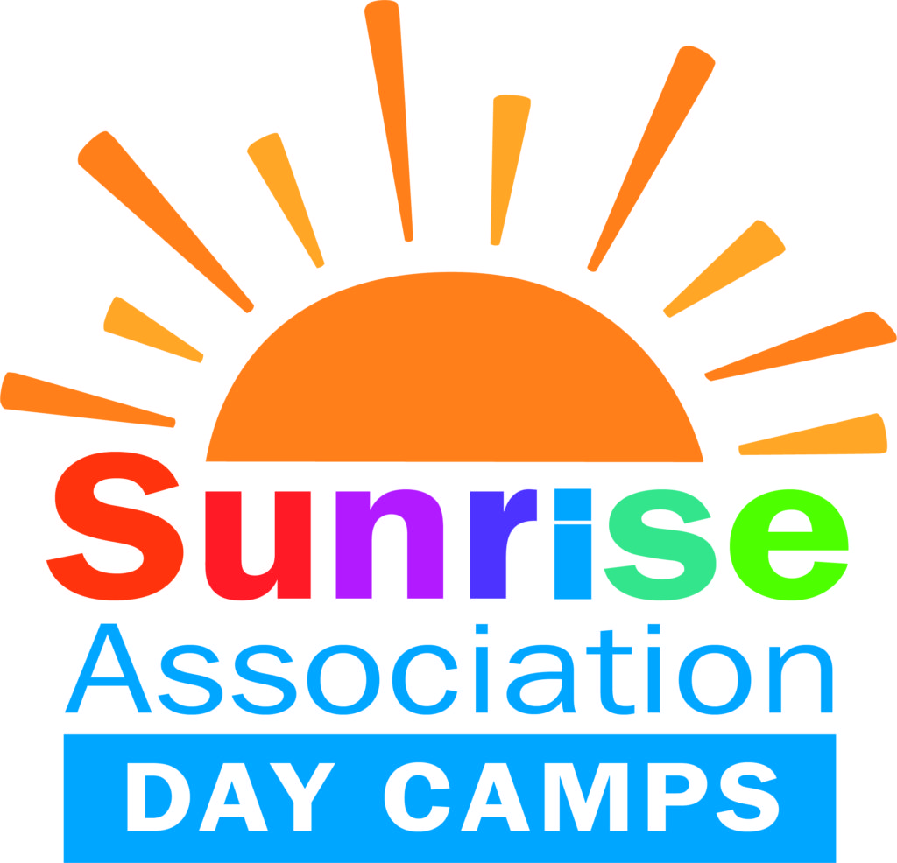
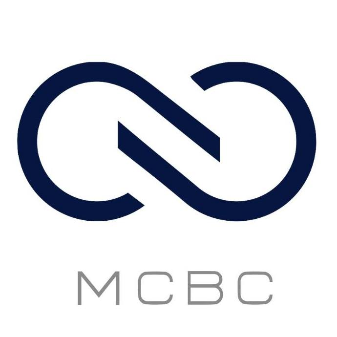

Personal
I find that too often people tend to focus on an individual's academic experiences and how well they perform in the classroom. I feel as if this is only a small aspect of one's abilities and life, which is why I created this page. I hope you enjoy looking through my involvement in extracurriculars, hobbies, and what I like to do in my free time.
Extracurriculars and Display of Leadership
Ever since becoming a student at the University of Michigan in August of 2018, I have strived to find ways to make this large, diverse community smaller. I have found that the best way for me to do this is by joining organizations throughout campus that I am interested in. Below, you can see my involvement in several student-run organizations on campus and how I am involved!
Secretary | Michigan Sales Club
I was elected secretary by the executive board to run the club's email list and coordinate with the Ross Cappo Sales Track program manager to send out weekly emails to 400+ students about recruiting events, presentations, and meetings. My responsibilities include organizing meeting times, keeping track of attendance, and answering members’ questions via email.
CSG Representative | School of Information Bachelor's Association (SIBA)
Elected by the School of Information student body, I serve as the Central Student Government Representative and work daily with the SIBA executive board. Some of my responsibilities include managing voting procedures and events, brainstorming methods to increase UMSI’s outreach efforts to underclassmen, and helping to connect BSI seniors with current seniors to support them with coursework and career advice. Also, I work with my peers to create weekly newsletters to send out to all students to keep them informed about diversity initiatives and upcoming events.

Fundraiser | Students for Sunrise
Throughout high school, I worked as a summer camp counselor at Sunrise Day Camp in Wheatley Heights, NY: the world's only dedicated day camp for children with cancer and their siblings, provided completely free of charge. I wanted to continue my involvement in this organization in college, which led me to Students for Sunrise. I work to raise thousands of dollars annually for the Sunrise Association and produce interactive Facebook posts and Instagram storyboards about pediatric cancer to buld traffic to the organization's donation website.
Head of Apparel Committee, Social Chair | Delta Sigma Phi Fraternity
As the head of the fraternity's apparel committee, I create apparel designs in Adobe Photoshop and communicate with our vendor to realize the quarterly manufacturing of over 1,000 shorts, sweatshirts, and accessories. I manage $7,500+ in orders and vendor payments through Google Sheets and Venmo. As a former social chair, I co-planned social events each semester and built relationships with similar organizations to improve our event coordination processes.
Social Media Manager, Market Update Group Leader | Michigan Chinese Business Club
My co-social media manager and I founded this position and expanded it tremendously throughout our time in the organization. We co-led the revival of the social media activity for the club's U.S.-based accounts to engage a broader undergraduate student audience. Also, we developed and implemented strategic initiatives to achieve growth in engagement, membership, and event attendance. As a market update group leader, I identified international stock market topics and led a team of five to create and deliver presentations with a focus on technology.
Hobbies
Below are some images of what I like to do during my free time!